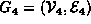
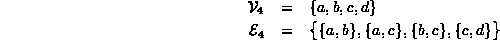
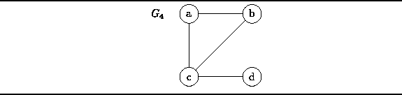
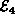
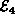

Data Structures and Algorithms
with Object-Oriented Design Patterns in C++
Data Structures and Algorithms
with Object-Oriented Design Patterns in C++An undirected graph is a graph in which the nodes are connected by undirected arcs . An undirected arc is an edge that has no arrow. Both ends of an undirected arc are equivalent--there is no head or tail. Therefore, we represent an edge in an undirected graph as a set rather than an ordered pair:
Definition (Undirected Graph) An undirected graph is an ordered pairwith the following properties:
- The first component,
, is a finite, non-empty set. The elements of
- The second component,
, is a finite set of sets. Each element of
For example, consider the undirected graph  comprised of four vertices and four edges:

The graph  can be represented
graphically as shown in Figure
can be represented
graphically as shown in Figure  .
The vertices are represented by appropriately labeled circles,
and the edges are represented by lines
that connect associated vertices.
.
The vertices are represented by appropriately labeled circles,
and the edges are represented by lines
that connect associated vertices.

Figure: An Undirected Graph
Notice that because an edge in an undirected graph is a set,
 ,
and since  is also a set,
it cannot contain more than one instance of a given edge.
Another consequence of Definition is that there cannot be an
edge from a node to itself in an undirected graph
because an edge is a set of size two
and a set cannot contain duplicates.
,
and since  is also a set,
it cannot contain more than one instance of a given edge.
Another consequence of Definition is that there cannot be an
edge from a node to itself in an undirected graph
because an edge is a set of size two
and a set cannot contain duplicates.
 Copyright © 1997 by Bruno R. Preiss, P.Eng. All rights reserved.
Copyright © 1997 by Bruno R. Preiss, P.Eng. All rights reserved.